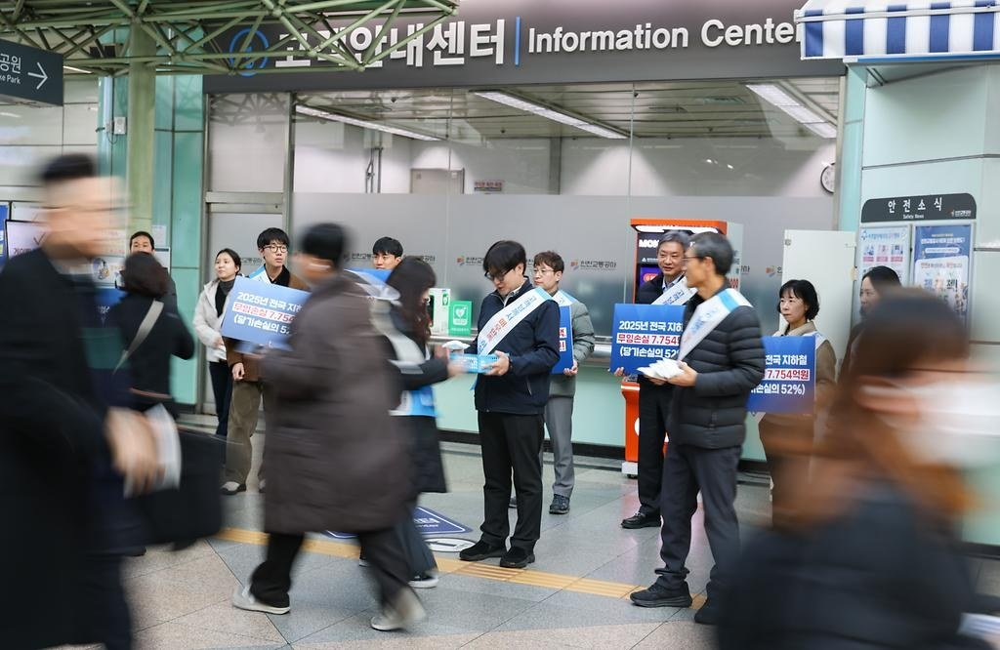

인천도시철도 무임승차 4년 새 78.7% 늘어…못 받은 운임 533억 원
승객 6명 중 1명꼴 무임…인천교통공사 노사, 국비보전 법제화 촉구
AI경제저널=김갑봉 기자 | 인천교통공사 노사가 도시철도 무임수송 손실을 나라가 보전해 달라고 시민 앞에 섰다. 공사는 9일 인천도시철도 1호선 인천터미널역에서 노사합동 캠페인을 벌였다. 지난해 무임수송으로 받지 못한 운임은 533억 원이다.

노사 30명, 6개 운영기관 같은 날
캠페인은 도시철도를 운영하는 6개 기관 노사가 한날 함께 벌였다. 인천에서는 공사 노사 관계자 약 30명이 시민에게 홍보물을 나눠 줬다.
공사는 무임수송에 따른 운영기관의 재정 부담과 정부 지원 제도 개선의 필요성에 공감대를 넓히려고 캠페인을 벌였다고 밝혔다.
공사에 따르면 지난해 인천도시철도 무임수송 인원은 약 3179만 명이다. 전체 승차인원의 16.4%에 이른다. 2021년 약 1779만 명과 견주면 4년 만에 78.7% 많다.
무임수송으로 받지 못한 운임을 공사는 미실현 수입이라 부른다. 같은 기간 240억 원에서 533억 원으로 두 배 넘게 불었다.
공사 관계자는 "무임수송은 교통약자의 이동권을 보장하는 중요한 공익서비스이지만, 이에 따른 비용이 도시철도 운영기관의 재정 부담으로 누적되고 있다"고 말했다.
무임 한 번에 1677원, 4년 새 24% 올라
4년 사이 무임 승객은 78.7% 늘었지만 받지 못한 운임은 122.1% 늘었다. 무임승차 한 번에 받지 못한 운임은 2021년 약 1349원에서 지난해 약 1677원으로 24% 올랐다(AI경제저널 계산). 공사 자료에는 그 까닭이 나오지 않는다.
무임 비율 16.4%로 거꾸로 따지면 지난해 인천도시철도 승객은 약 1억 9천만 명이다(AI경제저널 계산). 승객 여섯 명에 한 명꼴로 요금을 내지 않고 탔다.
법정 무임승차는 1984년부터 시행된 국가 교통복지 정책이다. 공사가 2월 낸 자료를 보면 한국철도공사는 「철도산업발전기본법」에 따라 국비를 지원받는다. 같은 무임 서비스를 하는 도시철도 운영기관에는 정부 지원의 법적 근거가 없다고 공사는 설명했다.
서울·부산·대구·광주·대전·인천 6개 운영기관 노사 대표는 2월 11일 부산에서 국비보전을 촉구하는 공동건의문을 채택했다. 최정규 사장은 당시 국민동의청원 5만 명 달성을 들어 22대 국회의 법 개정을 기대한다고 밝혔다.
지난 9일 캠페인에서도 공사 경영진과 노동자가 함께 역사에서 홍보물을 나눴다. 공사는 "국가 차원의 합리적인 비용 분담 체계"를 위해 다른 운영기관과 국비보전 법제화에 함께 대응하겠다고 밝혔다.
참고문헌
- 인천교통공사 미디어팀(2026). 인천교통공사, 무임수송 국비보전 촉구 노사합동 캠페인 실시(보도자료). 2026년 11월 9일. https://www.ictr.or.kr/main/bbs/bbsMsgDetail.do?msg_seq=3464&bcd=report
- 인천교통공사 미디어팀(2026). 전국 6개 도시철도 기관 '무임손실 국비보전' 법제화 공동 대응(보도자료). 2026년 2월 11일. https://www.ictr.or.kr/main/bbs/bbsMsgDetail.do?msg_seq=3337&bcd=report
[사진 출처]
- [사진1] 인천교통공사 보도자료 「인천교통공사, 무임수송 국비보전 촉구 노사합동 캠페인 실시」(2026.11.9) https://www.ictr.or.kr/main/bbs/bbsMsgDetail.do?msg_seq=3464&bcd=report
관련기사
- [인천경제&경제사③] 관세는 빚 담보로, 쌀은 인천 부두로… 개항기 인천의 두 길
- 인천 전셋값 올해 4.71% 상승, 집값의 여섯 배
- [인천경제&경제사②] 1883년 인천 개항장, 관세권은 일부 회복, 조계 땅은 「영구히」 조차
저작권자 © AI경제저널 무단전재 및 재배포, AI학습 및 활용 금지